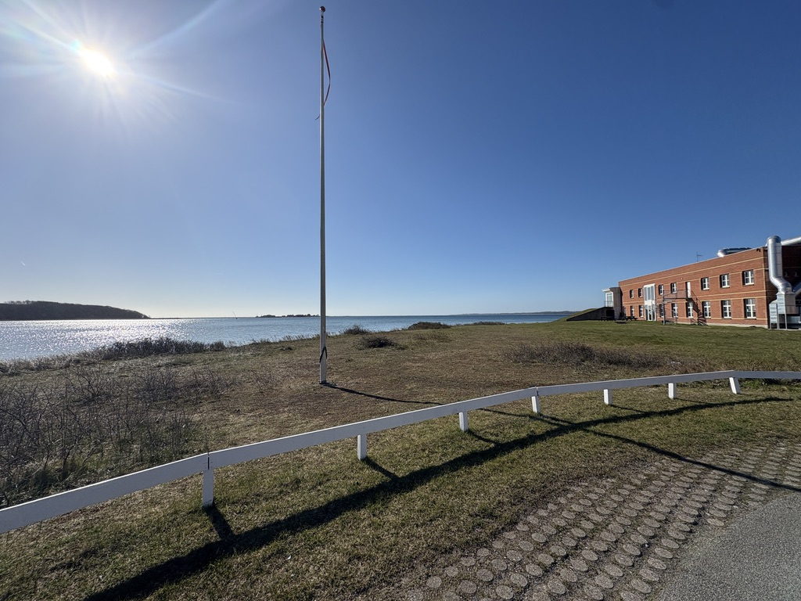

For mange muligheter
Vi finner stedet der en liten, fokusert AI-innsats kan skape størst effekt.
AI Enablement
Kontekst før teknologi.
Waltham hjelper eiere og ledere med å tenke nytt om hvordan arbeidet blir gjort — ikke ved å legge til mer programvare, men ved å bruke AI der det skaper reell forretningsverdi.
Et begrenset antall nye prosjekter om gangen. Alle forespørsler vurderes personlig.
Gratis potensialsjekk
Legg inn virksomhetens hjemmeside. Vi undersøker offentlige signaler og finner konkrete muligheter innen marked, kunder, AI, synlighet, PR og profilering.
Én nettadresse. En første, reell vurdering.
Slik velger Waltham prosjekter
Waltham er en erfaren og involvert samarbeidspartner — ikke et stort konsulenthus med en ledig konsulentbenk. Derfor tar Waltham bare inn nye prosjekter når tre ting er til stede: kapasitet til å gjøre arbeidet ordentlig, ekte interesse for utfordringen og en tydelig mulighet til å tilføre verdi.
Fortell kort hva dere står overfor. Nikolai Waltham vurderer personlig om oppdraget er riktig match. Hvis svaret er ja, foreslår Waltham et konkret sted å begynne. Hvis ikke, sier vi det åpent.
Store problemer. Enkle ord. Konkrete resultater.
AI skaper først verdi når teknologien kobles til virksomhetens kunder, beslutninger, kunnskap og daglige arbeidsprosesser. Derfor begynner vi ikke med verktøyet. Vi begynner med forretningen.
Vi kombinerer mange års erfaring med entreprenørskap, strategi og praktisk problemløsning med en dyp forståelse av hvordan AI kan utvikle nye forretningsmodeller, effektivisere arbeidet og føre ideer ut i livet.
Det er AI Enablement: å gjøre AI konkret, anvendelig og forankret i måten virksomheten faktisk arbeider på. Waltham fungerer som en praktisk AI-enabler med fokus på muligheter som kan brukes, måles og bygges videre på.
Vi finner stedet der en liten, fokusert AI-innsats kan skape størst effekt.
Vi oppdager arbeidet som sluker tid, og bygger enklere systemer rundt det.
Vi kobler teknologien til ansvar, arbeidsprosesser og en realistisk vei til drift.
Produkter & priser
Produktene viser konkrete måter et samarbeid kan begynne på — ikke en nettbutikk der alle oppdrag automatisk aksepteres. Send en forespørsel om ett spørsmål, én beslutning eller én mulighet. Hvis oppdraget er en god match, avtaler vi ramme, pris og leveranse på forhånd.
Dere eier beslutningen. Waltham vurderer matchen og leverer oversikt, anbefaling og et tydelig neste steg.
En leveranse dere kan ta med videre
Dere får et visuelt, forståelig og delbart produkt som samler analysen, dokumentasjonen, anbefalingene og de neste mulige stegene.
Forstå markedet og menneskene.
02Finn veien inn i et nytt marked.
03Sett teknologien i praktisk arbeid.
04Forklar og presenter det tydelig.
Se produktfamilier, leveranser og priser →
«Er denne muligheten verdt å gå videre med?»
En rask, uavhengig vurdering av en eiendom, idé, investering eller forretningsmulighet.
Før ledelsen investerer, får den vurdert dansk etterspørsel, konkurranse, adgangsbarrierer og realistiske veier inn. Rapporten avsluttes med: stopp, undersøk mer eller gå videre.
«Hvem er markedet — og hvor finner vi de beste kundene?»
Et fokusert svar på ett markedsspørsmål, slik at dere kan prioritere på et bedre grunnlag.
En norsk industrivirksomhet vil vite hvilke danske selskaper som passer best til produktet. Vi kartlegger, segmenterer og leverer en prioritert prospectliste med konkrete innganger.
«Hvordan gjør vi verdien tydelig for bank, kjøper eller investor?»
En beslutningsklar case som samler dokumentasjon, økonomi, scenarioer og fortelling.
En norsk virksomhet skal ha styret og banken med på en dansk satsing. Vi samler markedsgrunnlag, investering, risiko og potensial i én forståelig digital case.
«Hvor kan AI konkret spare tid eller skape verdi?»
En praktisk gjennomgang av én del av virksomheten, uten binding til et større teknologiprosjekt.
En norsk produsent forventer flere danske henvendelser og dokumentkrav. Vi finner hvordan AI kan kvalifisere leads, forstå materialet og forberede svar.
«Hvordan skaper vi dokumentasjon markedet faktisk vil interessere seg for?»
Vi bygger en troverdig PR-case rundt analyse, data eller dokumenterbar kunnskap.
Vi utvikler en analyseidé som skaper relevant kunnskap om den danske bransjen. Resultatene blir grunnlag for troverdig dansk presseomtale, budskap og en målrettet medieplan.
«Vi må forklare noe raskt — kan dere gjøre det presentabelt?»
En profesjonell og mobiltilpasset presentasjonsside som er klar til å sende som én lenke.
Den norske virksomheten skal møte danske partnere. På tre arbeidsdager får den en danskrettet side som forklarer produktet, relevansen og grunnen til å ta dialogen.
«Vi trenger en profesjonell hjemmeside nå — kan dere få den ordentlig på plass?»
En komplett, skarp og mobiltilpasset hjemmeside med en tydelig posisjon, konkrete tjenester og en enkel vei til kontakt.
Virksomheten har kundene og kompetansen, men en utdatert eller manglende hjemmeside. Vi strukturerer budskapet, bygger siden og gjør den klar til å deles og bli funnet.
Prisene er ekskl. moms og eventuelle eksterne kostnader. Omfang og fast pris bekreftes alltid før arbeidet begynner.
Markedsinngang · Danmark · Norge · Tyskland
One front door. The right specialists behind it.
Waltham undersøker markedet, finner de mest relevante kundene og gjør inngangen konkret. Når oppgaven krever selskapsetablering, moms, logistikk, lokale salgskanaler eller spesialistkompetanse, samler vi det rette laget rundt virksomheten.
Fra mulighet til anvendelse
Den beste starten er ofte én avgrenset arbeidsprosess der effekten kan ses, måles og forstås. Når den virker i virkeligheten, kan vi bygge videre med langt mindre risiko.
Metoden er enkel nok for en liten virksomhet og robust nok for en større organisasjon.
Kunder, mål, kunnskap, beslutninger og arbeidsprosessene som skaper eller bremser verdi.
Vi prioriterer etter effekt, gjennomførbarhet, risiko og læringsverdi.
En agent, en arbeidsflyt eller et beslutningsverktøy — uten unødvendig kompleksitet.
Vi måler, justerer og avgjør på et opplyst grunnlag om løsningen skal skaleres.
AI gjør ikke erfaring mindre verdifull. AI gjør erfaring mer skalerbar.
Én sammenhengende verdikjede
Vi kan gå inn i én avgrenset oppgave eller følge muligheten fra research til gjennomføring.
Eiendom · investeringer · virksomheter · prosjekter
Vi identifiserer, strukturerer og visualiserer skjult verdi i komplekse aktiva og muligheter — og gjør casen klar for bank, investor, kjøper eller partner.
Se casene våre →Know the market before you make the move
Vi undersøker markeder, kunder, konkurrenter og muligheter med data, AI-research og mer enn 25 års praktisk analyseerfaring. Målet er å vite hva dere bør gjøre nå.
Fra mulighet til forretning
Vi finner de mest lovende kundene, anvendelsene og veiene til markedet og hjelper med å teste dem i praksis.
Når noe står fast
Vi rydder i mål, ansvar, dokumentasjon og interesser, og etablerer et enkelt system for beslutninger og fremdrift.
Erfarent, uavhengig motspill
Løpende, fortrolig sparring for eiere og ledere som trenger ærlige spørsmål, nye perspektiver og praktisk dømmekraft.
Waltham Ventures
AI gjør det mulig å undersøke, teste og bygge smale virksomheter langt raskere enn før. Waltham kombinerer teknologien med kommersiell dømmekraft, markedskunnskap og praktisk gjennomføring — og utvikler både løsninger for kunder og egne konsepter.
Bredden er ikke målet. Målet er å finne en konkret mulighet, bygge den minste troverdige løsningen og la markedet avgjøre om den skal vokse.
En selvstendig inngang for internasjonale virksomheter som vil undersøke og åpne Norden.
En målrettet markedsplass som forbinder norske campingmuligheter med danske gjester.
Formidling av kontorlokaler og facility management fra konkret behov til lokal løsning.
Finn signalet. Test etterspørselen. Bygg det markedet faktisk vil bruke.
Se Waltham Ventures →AI i virkeligheten
Eiendom · drift · utvikling
Lindholm Business Center er et konkret eksempel på hvordan utleie, kommunikasjon, digitale løsninger, fysiske forbedringer og daglige behov kan utvikles som ett samlet system.
Arbeidet kombinerer kommersiell utleie, leietakerkontakt, synlighet, nettsideutvikling og praktisk eiendomsdrift – med mål om å skape et attraktivt og velfungerende miljø for virksomheter.

Eiendom · finansiering · utviklingsmulighet
En større næringseiendom bør ikke bare forklares gjennom areal og sammenlignbare salg. Leietakere, drift, utviklingsmuligheter, beliggenhet og fremtidig bruk kan til sammen skape et langt sterkere beslutningsgrunnlag.
Waltham samler dokumentasjon, scenarioer, økonomi og visualisering i en beslutningsklar case som gjør det lettere for bank, investor eller kjøper å se hele muligheten.
2000–2025 · Systemer · markedsinnsikt · skalering
InFact ble bygget rundt et automatisert telefonisystem som gjorde omfattende datainnsamling raskere og skalerbar. Virksomheten koblet teknologi, analyse og kommunikasjon gjennom mer enn to tiår med markeds- og opinionsundersøkelser.
Besøk InFact.no →Kompleks sak · digitalt saksrom
En omfattende lokal plansak var fordelt på dokumenter, høringssvar, myndighetsavgjørelser, nyhetsartikler og ulike fremstillinger av saken. Det gjorde den vanskelig å forstå — også for mennesker som ønsket å engasjere seg.
Vi samlet materialet i et digitalt saksrom med tydelig tidslinje, temaer, kilder og forklaringer. Resultatet er en åpen kunnskapsbase som gjør kompleks informasjon søkbar, etterprøvbar og lettere å handle på.
Se BevarNyborgFjord.dk →Waltham Loggbok
Observasjoner, erfaringer og ideer om virksomheter, teknologi, eiendommer og mennesker — skrevet underveis. Kort, konkret og uten konsulentspråk.
Fortløpende opptegnelser · nyeste førstLoggbok ført siden 2026
Verktøy
Bruk vår enkle problemavklaring. Den gir et kort utgangspunkt for en bedre første samtale — uten registrering.
Erfaring
Waltham er grunnlagt av Nikolai Waltham og bygger på flere tiår med entreprenørskap, markedsanalyse, automatisering, digital utvikling, eiendom og praktisk problemløsning.
Rundt år 2000 utviklet Waltham et fullautomatisert telefonisystem for datainnsamling. Siden har arbeid med teknologi, automatisering og digitale løsninger vært en aktiv del av virksomheten — ikke noe som først kom med AI.
Allerede med InFact handlet arbeidet om å omsette menneskelige prosesser til skalerbare systemer. I dag gjør AI det mulig å bruke den erfaringen langt raskere og på helt nye områder.
Vi arbeider som en fleksibel kjerne med et nettverk av spesialister, og helst i små, oversiktlige etapper der verdien blir synlig underveis. Hvis det virker, bygger vi videre.
«Teknologien er ny. Spørsmålet er det samme: Hvordan får vi systemet til å arbeide smartere?»
Work with Waltham
Er du selvstendig konsulent, spesialist eller kommersiell problemløser? Waltham bygger et fleksibelt nettverk innen analyse, teknologi, salg, kommunikasjon og forretningsutvikling.
Du kommer med det du er virkelig god til. Waltham skaper og strukturerer mulighetene og samler riktig lag rundt hvert oppdrag.
Fortrolig første henvendelse
Ikke alle oppdrag passer for Waltham. Beskriv gjerne situasjonen i overordnede og anonymiserte vendinger, og utelat navn, sensitive personopplysninger og fortrolig materiale i den første e-posten. Jeg vurderer personlig om det finnes kapasitet, ekte interesse og en tydelig mulighet til å bidra konstruktivt.